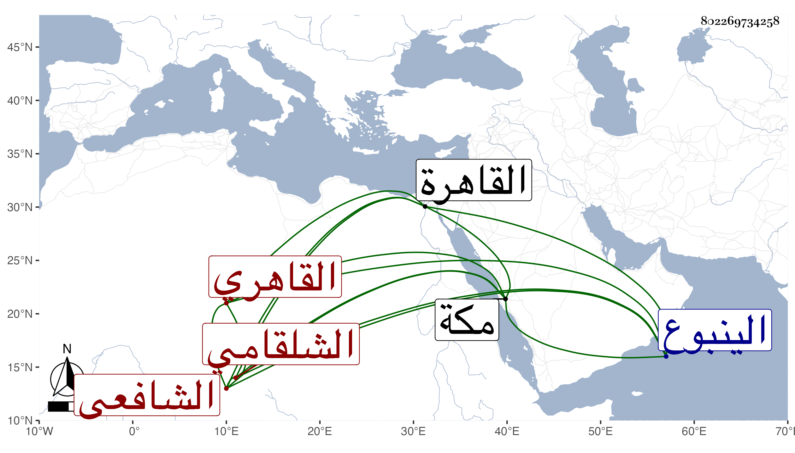

0902Sakhawi.DawLamic.ITO20230111-ara1.EIS1600.802269734258
Biography ID: 802269734258
808
علي بن عبد الرحمن بن محمد بن محمد بن إسماعيل بن سلطان نور الدين أبو الحسن بن الكمال الشلقامي بضمتين ثم القاهري الشافعي . ولد سنة ست وأربعين وسبعمائة تقريبا فإنه كتب بخطه أنه قبل الطاعون بعامين أو ثلاثة ، وكان الطاعون سنة تسع وأربعين وتفقه بالبلقيني والأبناسي بل وبالأسنوي فيما كان يذكره وبه جزم شيخنا في معجمه وبمقتضى ذلك يكون خاتمة من تفقه عنده وأخذ الفرائض عن الكلائي والعربية وغيرها عن جماعة وسمع في سنة ستين على العرضي المجلس الأول من مسند أحمد وانتهى إلى حديث إبراهيم عن علقمة عن عمر كان صلى الله عليه وسلم يسمر عند أبي بكر الليلة الحديث ، وكان يذكر أنه سمع على أبي الحرم القلانسي والبهاء بن خليل صحيح البخاري ، وولي وظيفة إسماع الحديث في وقف الطنبذي بجامع الأزهر ، وتكسب بالشهادة دهرا ولذا كانت بيده الشهادة بديوان الجوالي وبقي من أعيان الشهود بل ناب عن الولي العراقي سنة أربع وعشرين في الحكم بالنحرارية ولكنه لم يتم له فيها أمر ثم استقر في السنة التي تليها في مشيخة الفخرية بين الصورين بعد وفاة رفيقه في الشهادة كان البرهان البيجوري ، وكان شيخا عالما فاضلا بارعا مشاركا في العربية وغيرها مستحضرا طرفا من اللغة والأدب عارفا بالوثائق بحيث وضع فيها كتابا مفيدا انتفع الناس به في زمنه وهلم جرا كل ذلك مع حسن الشكالة والهيئة والكياسة والمداومة لملازمة حانوت الشهود ، وقد حج وجاور بمكة مرارا ، وذكره شيخنا في معجمه وتاريخه معا وأثنى عليه وليس تكرار محمد عنده في نسبه بل هو عند ابن فهد . وقال شيخنا أنه أنشده لنفسه لغزا لكنه لم يبينه وهو قوله :
| سألت عن أحجية | تسمو كضوء القمر |
| وهي كقول القائل | إطرح أصول البشر |
وتفسيره القمني فإن أطرح مقابل ألق وأصول البشر مني . ورغب في آخر عمره عن الفخرية لابن المرخم وتوقف الواقف في إمضائه فألزمه الكمال بن البارزي بعناية القاياتي بذلك وعمل حينئذ فيها إجلاسا وكذا نزل عن شهادة الجوالي للبرهان السفطي وعن الإسماع للمحيوي الطوخي وتوجه صحبة الحاج فقوي عليه الضعف بحيث عجز عن ركوب المحارة فركب البحر من السويس إلى الينبوع وعجز عن التوجه صحبة الحاج فأقام به حتى رجعوا فعاد في البر معهم فمات قبل دخوله القاهرة في المحرم سنة اثنتين وأربعين ، وذكره المقريزي في عقوده باختصار وقال : كان فاضلا في فنون ممن درس ، وقد أخذ عنه جماعة بل قرأ عليه الكلوتاتي البخاري وثنا البدر الدميري بكثير من أحواله وكرهت ما بلغني عنه من مناكدته لرفيقه في الجلوس البرهان البيجوري رحمهما الله وإيانا .
